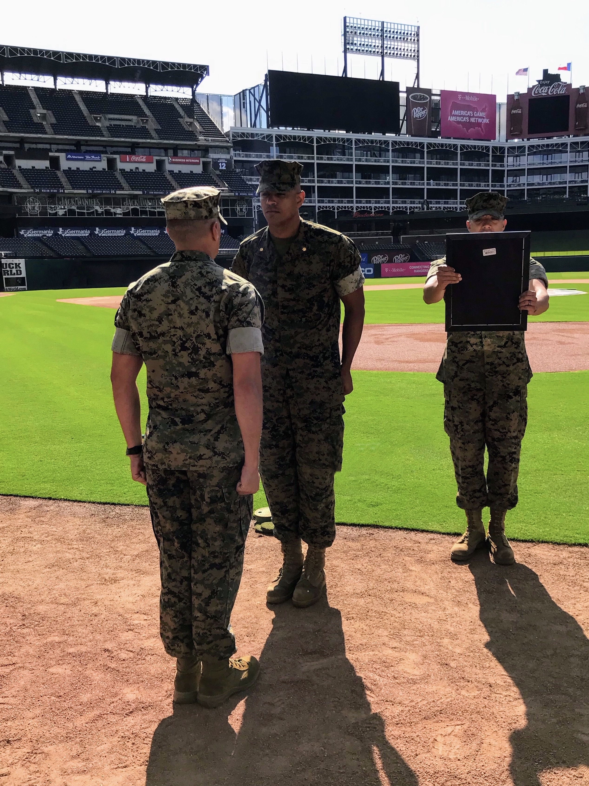

I’m Brett — if you’ve made it this far without figuring out my last name…well, anyway — active duty Marine, 20 years in — zero more to go — and I’ve been around baseball even longer. One of those has taught me patience. The other has tested it.
I grew up in the DFW metroplex, which means I’m a Texas Rangers fan. We’re not discussing 2011. Some people have trust issues. I have October. I’ve moved on. Mostly. 2023 helped. Flags fly forever.
Baseball’s been part of my life for as long as I can remember — playing, coaching, overanalyzing, and occasionally pretending I didn’t just pull a hamstring trying to relive the glory days.
In 2022, during a Little League championship game I was coaching, my son’s glove blew out. He loved that glove. I looked at the price of a new one and briefly considered selling a kidney. Instead, I taught myself how to relace it.
That one repair turned into a full-blown obsession.
Turns out gloves aren’t just leather and string. They’re break-in, feel, superstition, and the only thing between you and a line drive reminding you why reflexes matter.
I don’t coach anymore. At some point your kid stops listening to you and needs someone else to tell him the exact same things you’ve been saying for years. I’m told this is “normal.” I remain skeptical.
Now I restore gloves with the same mindset I’ve carried for two decades: attention to detail, no shortcuts, and zero interest in doing something halfway. I’m not a factory. I’m not mass-producing repairs. It’s just me — and occasionally my son if he has nothing better to do — rebuilding tools that matter to the people who use them.
Born and raised in DFW. Living in Surf City, NC. Planning to stay. Still watching and spending too much money on baseball. Still fixing what can be saved. And still refusing to buy a new glove if the old one just needs someone patient enough to bring it back.
